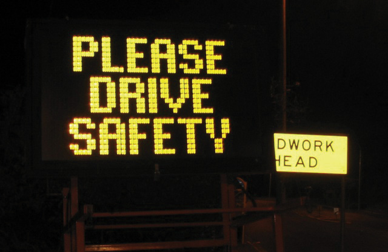

Just as a mason uses bricks to build sturdy homes, writers use words to build successful documents. Consider the construction of a building. Builders need to use tough, reliable materials to build a solid and structurally sound skyscraper. From the foundation to the roof and every floor in between, every part is necessary. Writers need to use strong, meaningful words from the first sentence to the last and in every sentence in between.
You already know many words that you use everyday as part of your writing and speaking vocabularyA collection of spoken and written words used by individuals or groups.. You probably also know that certain words fit better in certain situations. Letters, e-mails, and even quickly jotted grocery lists require the proper selection of vocabulary. Imagine you are writing a grocery list to purchase the ingredients for a recipe but accidentally write down cilantro when the recipe calls for parsley. Even though cilantro and parsley look remarkably alike, each produces a very different effect in food. This seemingly small error could radically alter the flavor of your dish!
Having a solid everyday vocabulary will help you while writing, but learning new words and avoiding common word errors will make a real impression on your readers. Experienced writers know that deliberate, careful word selection and usage can lead to more polished, more meaningful work. This chapter covers word choice and vocabulary-building strategies that will improve your writing.
Some words in English cause trouble for speakers and writers because these words share a similar pronunciation, meaning, or spelling with another word. These words are called commonly confused wordsWords that share a similar pronunciation, meaning, or spelling.. For example, read aloud the following sentences containing the commonly confused words new and knew:
I liked her new sweater.
I knew she would wear that sweater today.
These words may sound alike when spoken, but they carry entirely different usages and meanings. New is an adjective that describes the sweater, and knew is the past tense of the verb to know. To read more about adjectives, verbs, and other parts of speech see Chapter 2 "Writing Basics: What Makes a Good Sentence?".
New and knew are just two of the words that can be confusing because of their similarities. Familiarize yourself with the following list of commonly confused words. Recognizing these words in your own writing and in other pieces of writing can help you choose the correct word.
A, An, And
A (article). Used before a word that begins with a consonant.
a key, a mouse, a screen
An (article). Used before a word that begins with a vowel.
an airplane, an ocean, an igloo
And (conjunction). Connects two or more words together.
peanut butter and jelly, pen and pencil, jump and shout
Accept, Except
Accept (verb). Means to take or agree to something offered.
They accepted our proposal for the conference.
Except (conjunction). Means only or but.
We could fly there except the tickets cost too much.
Affect, Effect
Affect (verb). Means to create a change.
Hurricane winds affect the amount of rainfall.
Effect (noun). Means an outcome or result.
The heavy rains will have an effect on the crop growth.
Are, Our
Are (verb). A conjugated form of the verb to be.
My cousins are all tall and blonde.
Our (pronoun). Indicates possession, usually follows the pronoun we.
We will bring our cameras to take pictures.
By, Buy
By (preposition). Means next to.
My glasses are by the bed.
Buy (verb). Means to purchase.
I will buy new glasses after the doctor’s appointment.
Its, It’s
Its (pronoun). A form of it that shows possession.
The butterfly flapped its wings.
It’s (contraction). Joins the words it and is.
It’s the most beautiful butterfly I have ever seen.
Know, No
Know (verb). Means to understand or possess knowledge.
I know the male peacock sports the brilliant feathers.
No. Used to make a negative.
I have no time to visit the zoo this weekend.
Loose, Lose
Loose (adjective). Describes something that is not tight or is detached.
Without a belt, her pants are loose on her waist.
Lose (verb). Means to forget, to give up, or to fail to earn something.
She will lose even more weight after finishing the marathon training.
Of, Have
Of (preposition). Means from or about.
I studied maps of the city to know where to rent a new apartment.
Have (verb). Means to possess something.
I have many friends to help me move.
Have (linking verb). Used to connect verbs.
I should have helped her with that heavy box.
Quite, Quiet, Quit
Quite (adverb). Means really or truly.
My work will require quite a lot of concentration.
Quiet (adjective). Means not loud.
I need a quiet room to complete the assignments.
Quit (verb). Means to stop or to end.
I will quit when I am hungry for dinner.
Right, Write
Right (adjective). Means proper or correct.
When bowling, she practices the right form.
Right (adjective). Also means the opposite of left.
The ball curved to the right and hit the last pin.
Write (verb). Means to communicate on paper.
After the team members bowl, I will write down their scores.
Set, Sit
Set (verb). Means to put an item down.
She set the mug on the saucer.
Set (noun). Means a group of similar objects.
All the mugs and saucers belonged in a set.
Sit (verb). Means to lower oneself down on a chair or another place
I’ll sit on the sofa while she brews the tea.
Suppose, Supposed
Suppose (verb). Means to think or to consider
I suppose I will bake the bread, because no one else has the recipe.
Suppose (verb). Means to suggest.
Suppose we all split the cost of the dinner.
Supposed (verb). The past tense form of the verb suppose, meaning required or allowed.
She was supposed to create the menu.
Than, Then
Than (conjunction). Used to connect two or more items when comparing
Registered nurses require less schooling than doctors.
Then (adverb). Means next or at a specific time.
Doctors first complete medical school and then obtain a residency.
Their, They’re, There
Their (pronoun). A form of they that shows possession.
The dog walker feeds their dogs everyday at two o’clock.
They’re (contraction). Joins the words they and are.
They’re the sweetest dogs in the neighborhood.
There (adverb). Indicates a particular place.
The dogs’ bowls are over there, next to the pantry.
There (pronoun). Indicates the presence of something
There are more treats if the dogs behave.
To, Two, Too
To (preposition). Indicates movement.
Let’s go to the circus.
To. A word that completes an infinitive verb.
to play, to ride, to watch.
Two. The number after one. It describes how many.
Two clowns squirted the elephants with water.
Too (adverb). Means also or very.
The tents were too loud, and we left.
Use, Used
Use (verb). Means to apply for some purpose.
We use a weed whacker to trim the hedges.
Used. The past tense form of the verb to use
He used the lawnmower last night before it rained.
Used to. Indicates something done in the past but not in the present
He used to hire a team to landscape, but now he landscapes alone.
Who’s, Whose
Who’s (contraction). Joins the words who and either is or has.
Who’s the new student? Who’s met him?
Whose (pronoun). A form of who that shows possession.
Whose schedule allows them to take the new student on a campus tour?
Your, You’re
Your (pronoun). A form of you that shows possession.
Your book bag is unzipped.
You’re (contraction). Joins the words you and are.
You’re the girl with the unzipped book bag.
The English language contains so many words; no one can say for certain how many words exist. In fact, many words in English are borrowed from other languages. Many words have multiple meanings and forms, further expanding the immeasurable number of English words. Although the list of commonly confused words serves as a helpful guide, even these words may have more meanings than shown here. When in doubt, consult an expert: the dictionary!
Complete the following sentences by selecting the correct word.
When writing, you need to choose the correct word according to its spelling and meaning in the context. Not only does selecting the correct word improve your vocabulary and your writing, but it also makes a good impression on your readers. It also helps reduce confusion and improve clarity. The following strategies can help you avoid misusing confusing words.
Figure 4.1 A Commonly Misused Word on a Public Sign
Commonly confused words appear in many locations, not just at work or at school. Be on the lookout for misused words wherever you find yourself throughout the day. Make a mental note of the error and remember its correction for your own pieces of writing.
All employers value effective communication. From an application to an interview to the first month on the job, employers pay attention to your vocabulary. You do not need a large vocabulary to succeed, but you do need to be able to express yourself clearly and avoid commonly misused words.
When giving an important presentation on the effect of inflation on profit margins, you must know the difference between effect and affect and choose the correct word. When writing an e-mail to confirm deliveries, you must know if the shipment will arrive in to days, too days, or two days. Confusion may arise if you choose the wrong word.
Consistently using the proper words will improve your communication and make a positive impression on your boss and colleagues.
The following paragraph contains eleven errors. Find each misused word and correct it by adding the proper word.
The original United States Declaration of Independence sets in a case at the Rotunda for the Charters of Freedom as part of the National Archives in Washington, DC. Since 1952, over one million visitors each year of passed through the Rotunda too snap a photograph to capture they’re experience. Although signs state, “No Flash Photography,” forgetful tourists leave the flash on, an a bright light flickers for just a millisecond. This millisecond of light may not seem like enough to effect the precious document, but supposed how much light could be generated when all those milliseconds are added up. According to the National Archives administrators, its enough to significantly damage the historic document. So, now, the signs display quit a different message: “No Photography.” Visitors continue to travel to see the Declaration that began are country, but know longer can personal pictures serve as mementos. The administrators’ compromise, they say, is a visit to the gift shop for a preprinted photograph.
Collaboration
Please share with a classmate and compare your answers.
Review the latest assignment you completed for school or for work. Does it contain any commonly confused words? Circle each example and use the circled words to begin your own checklist of commonly confused words. Continue to add to your checklist each time you complete an assignment and find a misused word.
One essential aspect of good writing is accurate spelling. With computer spell checkers, spelling may seem simple, but these programs fail to catch every error. Spell checkers identify some errors, but writers still have to consider the flagged words and suggested replacements. Writers are still responsible for the errors that remain.
For example, if the spell checker highlights a word that is misspelled and gives you a list of alternative words, you may choose a word that you never intended even though it is spelled correctly. This can change the meaning of your sentence. It can also confuse readers, making them lose interest. Computer spell checkers are useful editing tools, but they can never replace human knowledge of spelling rules, homonyms, and commonly misspelled words.
The best way to master new words is to understand the key spelling rules. Keep in mind, however, that some spelling rules carry exceptions. A spell checker may catch these exceptions, but knowing them yourself will prepare you to spell accurately on the first try. You may want to try memorizing each rule and its exception like you would memorize a rhyme or lyrics to a song.
Write i before e except after c, or when pronounced ay like “neighbor” or “weigh.”
When words end in a consonant plus y, drop the y and add an i before adding another ending.
When words end in a vowel plus y, keep the y and add the ending.
Memorize the following exceptions to this rule: day, lay, say, pay = daily, laid, said, paid
When adding an ending that begins with a vowel, such as -able, -ence, -ing, or -ity, drop the last e in a word.
When adding an ending that begins with a consonant, such as -less, -ment, or -ly, keep the last e in a word.
For many words ending in a consonant and an o, add -s when using the plural form.
Add -es to words that end in s, ch, sh, and x.
Identify and correct the nine misspelled words in the following paragraph.
Sherman J. Alexie Jr. was born in October 1966. He is a Spokane/Coeur d’Alene Indian and an American writer, poet, and filmmaker. Alexie was born with hydrocephalus, or water on the brain. This condition led doctors to predict that he would likly suffer long-term brain damage and possibly mental retardation. Although Alexie survived with no mental disabilitys, he did suffer other serious side effects from his condition that plagud him throughout his childhood. Amazingly, Alexie learned to read by the age of three, and by age five he had read novels such as John Steinbeck’s The Grapes of Wrath. Raised on an Indian reservation, Alexie often felt aleinated from his peers due to his avid love for reading and also from the long-term effects of his illness, which often kept him from socializeing with his peers on the reservation. The reading skills he displaid at such a young age foreshadowed what he would later become. Today Alexie is a prolific and successful writer with several story anthologeis to his credit, noteably The Lone Ranger and Tonto Fistfight in Heaven and The Toughest Indian in the World. Most of his fiction is about contemporary Native Americans who are influenced by pop culture and pow wows and everything in between. His work is sometimes funny but always thoughtful and full of richness and depth. Alexie also writes poetry, novels, and screenplays. His latest collection of storys is called War Dances, which came out in 2009.
Collaboration
Please share with a classmate and compare your answers.
Eight Tips to Improve Spelling Skills
Remember to focus on spelling during the editing and revising step of the writing process. Start with the big ideas such as organizing your piece of writing and developing effective paragraphs, and then work your way down toward the smaller—but equally important—details like spelling and punctuation. To read more about the writing process and editing and revising, see Chapter 8 "The Writing Process: How Do I Begin?".
HomonymsA word that sounds like another word but has a different meaning. are words that sound like one another but have different meanings.
Principle, Principal
Principle (noun). A fundamental concept that is accepted as true.
The principle of human equality is an important foundation for all nations.
Principal (noun). The original amount of debt on which interest is calculated.
The payment plan allows me to pay back only the principal amount, not any compounded interest.
Principal (noun). A person who is the main authority of a school.
The principal held a conference for both parents and teachers.
Where, Wear, Ware
Where (adverb). The place in which something happens.
Where is the restaurant?
Wear (verb). To carry or have on the body.
I will wear my hiking shoes when go on a climb tomorrow morning.
Ware (noun). Articles of merchandise or manufacture (usually, wares).
When I return from shopping, I will show you my wares.
Lead, Led
Lead (noun). A type of metal used in pipes and batteries.
The lead pipes in my homes are old and need to be replaced.
Led (verb). The past tense of the verb lead.
After the garden, she led the patrons through the museum.
Which, Witch
Which (pronoun). Replaces one out of a group.
Which apartment is yours?
Witch (noun). A person who practices sorcery or who has supernatural powers.
She thinks she is a witch, but she does not seem to have any powers.
Peace, Piece
Peace (noun). A state of tranquility or quiet.
For once, there was peace between the argumentative brothers.
Piece (noun). A part of a whole.
I would like a large piece of cake, thank you.
Passed, Past
Passed (verb). To go away or move.
He passed the slower cars on the road using the left lane.
Past (noun). Having existed or taken place in a period before the present.
The argument happened in the past, so there is no use in dwelling on it.
Lessen, Lesson
Lessen (verb). To reduce in number, size, or degree.
My dentist gave me medicine to lessen the pain of my aching tooth.
Lesson (noun). A reading or exercise to be studied by a student.
Today’s lesson was about mortgage interest rates.
Patience, Patients
Patience (noun). The capacity of being patient (waiting for a period of time or enduring pains and trials calmly).
The novice teacher’s patience with the unruly class was astounding.
Patients (plural noun). Individuals under medical care.
The patients were tired of eating the hospital food, and they could not wait for a home-cooked meal.
Sees, Seas, Seize
Sees (verb). To perceive with the eye.
He sees a whale through his binoculars.
Seas (plural noun). The plural of sea, a great body of salt water.
The tidal fluctuation of the oceans and seas are influenced by the moon.
Seize (verb). To possess or take by force.
The king plans to seize all the peasants’ land.
Threw, Through
Threw (verb). The past tense of throw.
She threw the football with perfect form.
Through (preposition). A word that indicates movement.
She walked through the door and out of his life.
Complete the following sentences by selecting the correct homonym.
Below is a list of commonly misspelled words. You probably use these words every day in either speaking or writing. Each word has a segment in bold type, which indicates the problem area of the word that is often spelled incorrectly. If you can, use this list as a guide before, during, and after you write.
Use the following two tricks to help you master these troublesome words:
Table 4.1 Commonly Misspelled Words
| across | disappoint | integration | particular | separate |
| address | disapprove | intelligent | perform | similar |
| answer | doesn’t | interest | perhaps | since |
| argument | eighth | interfere | personnel | speech |
| athlete | embarrass | jewelry | possess | strength |
| beginning | environment | judgment | possible | success |
| behavior | exaggerate | knowledge | prefer | surprise |
| calendar | familiar | maintain | prejudice | taught |
| career | finally | mathematics | privilege | temperature |
| conscience | government | meant | probably | thorough |
| crowded | grammar | necessary | psychology | thought |
| definite | height | nervous | pursue | tired |
| describe | illegal | occasion | reference | until |
| desperate | immediately | opinion | rhythm | weight |
| different | important | optimist | ridiculous | written |
Identify and correct the ten commonly misspelled words in the following paragraph.
Brooklyn is one of the five boroughs that make up New York City. It is located on the eastern shore of Long Island directly accross the East River from the island of Manhattan. Its beginings stretch back to the sixteenth century when it was founded by the Dutch who originally called it “Breuckelen.” Immedietely after the Dutch settled Brooklyn, it came under British rule. However, neither the Dutch nor the British were Brooklyn’s first inhabitants. When European settlers first arrived, Brooklyn was largely inhabited by the Lenapi, a collective name for several organized bands of Native American people who settled a large area of land that extended from upstate New York through the entire state of New Jersey. They are sometimes referred to as the Delaware Indians. Over time, the Lenapi succumbed to European diseases or conflicts between European settlers or other Native American enemies. Finalley they were pushed out of Brooklyn completely by the British.
In 1776, Brooklyn was the site of the first importent battle of the American Revolution known as the Battle of Brooklyn. The colonists lost this battle, which was led by George Washington, but over the next two years they would win the war, kicking the British out of the colonies once and for all.
By the end of the nineteenth century, Brooklyn grew to be a city in its own right. The completion of the Brooklyn Bridge was an ocasion for celebration; transportation and commerce between Brooklyn and Manhattan now became much easier. Eventually, in 1898, Brooklyn lost its seperate identity as an independent city and became one of five boroughs of New York City. However, in some people’s opinien, the intagration into New York City should have never happened; they though Brooklyn should have remained an independent city.
Collaboration
Please share with a classmate and compare your answers.
In today’s job market, writing e-mails has become a means by which many people find employment. E-mails to prospective employers require thoughtful word choice, accurate spelling, and perfect punctuation. Employers’ inboxes are inundated with countless e-mails daily. If even the subject line of an e-mail contains a spelling error, it will likely be overlooked and someone else’s e-mail will take priority.
The best thing to do after you proofread an e-mail to an employer and run the spell checker is to have an additional set of eyes go over it with you; one of your teachers may be able to read the e-mail and give you suggestions for improvement. Most colleges and universities have writing centers, which may also be able to assist you.
What is your definition of a successful person? Is it based on a person’s profession or is it based on his or her character? Perhaps success means a combination of both. In one paragraph, describe in detail what you think makes a person successful. When you are finished, proofread your work for spelling errors. Exchange papers with a partner and read each other’s work. See if you catch any spelling errors that your partner missed.
Effective writing involves making conscious choices with words. When you prepare to sit down to write your first draft, you likely have already completed some freewriting exercises, chosen your topic, developed your thesis statement, written an outline, and even selected your sources. When it is time to write your first draft, start to consider which words to use to best convey your ideas to the reader.
Some writers are picky about word choice as they start drafting. They may practice some specific strategies, such as using a dictionary and thesaurus, using words and phrases with proper connotations, and avoiding slang, clichés, and overly general words.
Once you understand these tricks of the trade, you can move ahead confidently in writing your assignment. Remember, the skill and accuracy of your word choice is a major factor in developing your writing style. Precise selection of your words will help you be more clearly understood—in both writing and speaking.
Even professional writers need help with the meanings, spellings, pronunciations, and uses of particular words. In fact, they rely on dictionaries to help them write better. No one knows every word in the English language and their multiple uses and meanings, so all writers, from novices to professionals, can benefit from the use of dictionaries.
Most dictionaries provide the following information:
Look at the following sample dictionary entry and see which of the preceeding information you can identify:
myth, mith, n. [Gr. mythos, a word, a fable, a legend.] A fable or legend embodying the convictions of a people as to their gods or other divine beings, their own beginnings and early history and the heroes connected with it, or the origin of the world; any invented story; something or someone having no existence in fact.—myth • ic, myth • i • cal
Like a dictionary, a thesaurus is another indispensable writing tool. A thesaurus gives you a list of synonyms, words that have the same (or very close to the same) meaning as another word. It also lists antonyms, words with the opposite meaning of the word. A thesaurus will help you when you are looking for the perfect word with just the right meaning to convey your ideas. It will also help you learn more words and use the ones you already know more correctly.
precocious adj, She’s such a precocious little girl!: uncommonly smart, mature, advanced, smart, bright, brilliant, gifted, quick, clever, apt.
Ant. slow, backward, stupid.
A denotationThe dictionary definition of a word. is the dictionary definition of a word. A connotationThe emotional or cultural meaning attached to a word., on the other hand, is the emotional or cultural meaning attached to a word. The connotation of a word can be positive, negative, or neutral. Keep in mind the connotative meaning when choosing a word.
Scrawny
Skinny
Lean
Notice that all the words have a very similar denotation; however, the connotations of each word differ.
In each of the following items, you will find words with similar denotations. Identify the words’ connotations as positive, negative, or neutral by writing the word in the appropriate box. Copy the chart onto your own piece of paper.
| Positive | Negative | Neutral |
|---|---|---|
SlangInformal words that are considered nonstandard English. describes informal words that are considered nonstandard English. Slang often changes with passing fads and may be used by or familiar to only a specific group of people. Most people use slang when they speak and in personal correspondences, such as e-mails, text messages, and instant messages. Slang is appropriate between friends in an informal context but should be avoided in formal academic writing.
Frequent exposure to media and popular culture has desensitized many of us to slang. In certain situations, using slang at work may not be problematic, but keep in mind that words can have a powerful effect. Slang in professional e-mails or during meetings may convey the wrong message or even mistakenly offend someone.
Edit the following paragraph by replacing the slang words and phrases with more formal language. Rewrite the paragraph on your own sheet of paper.
I felt like such an airhead when I got up to give my speech. As I walked toward the podium, I banged my knee on a chair. Man, I felt like such a klutz. On top of that, I kept saying “like” and “um,” and I could not stop fidgeting. I was so stressed out about being up there. I feel like I’ve been practicing this speech 24/7, and I still bombed. It was ten minutes of me going off about how we sometimes have to do things we don’t enjoy doing. Wow, did I ever prove my point. My speech was so bad I’m surprised that people didn’t boo. My teacher said not to sweat it, though. Everyone gets nervous his or her first time speaking in public, and she said, with time, I would become a whiz at this speech giving stuff. I wonder if I have the guts to do it again.
Collaboration
Please share with a classmate and compare your answers.
ClichésA descriptive expression that has lost its effectiveness because it is overused. are descriptive expressions that have lost their effectiveness because they are overused. Writing that uses clichés often suffers from a lack of originality and insight. Avoiding clichés in formal writing will help you write in original and fresh ways.
Think about all the cliché phrases that you hear in popular music or in everyday conversation. What would happen if these clichés were transformed into something unique?
On your own sheet of paper, revise the following sentences by replacing the clichés with fresh, original descriptions.
Specific words and images make your writing more interesting to read. Whenever possible, avoid overly general words in your writing; instead, try to replace general language with particular nouns, verbs, and modifiers that convey details and that bring yours words to life. Add words that provide color, texture, sound, and even smell to your writing.
Revise the following sentences by replacing the overly general words with more precise and attractive language. Write the new sentences on your own sheet of paper.
Review a piece of writing that you have completed for school. Circle any sentences with slang, clichés, or overly general words and rewrite them using stronger language.
The English language contains an enormous and ever-growing number of words. Enhancing your vocabulary by learning new words can seem overwhelming, but if you know the common prefixes and suffixes of English, you will understand many more words.
Mastering common prefixes and suffixes is like learning a code. Once you crack the code, you can not only spell words more correctly but also recognize and perhaps even define unfamiliar words.
A prefixA word part added to the beginning of a word to create a new meaning. is a word part added to the beginning of a word to create a new meaning. Study the common prefixes in Table 4.2 "Common Prefixes".
The main rule to remember when adding a prefix to a word is not to add letters or leave out any letters. See Table 4.2 "Common Prefixes" for examples of this rule.
Table 4.2 Common Prefixes
| Prefix | Meaning | Example |
|---|---|---|
| dis | not, opposite of | dis + satisfied = dissatisfied |
| mis | wrongly | mis + spell = misspell |
| un | not | un + acceptable = unacceptable |
| re | again | re + election = reelection |
| inter | between | inter + related = interrelated |
| pre | before | pre + pay = prepay |
| non | not | non + sense = nonsense |
| super | above | super + script = superscript |
| sub | under | sub + merge = submerge |
| anti | against, opposing | anti + bacterial = antibacterial |
Identify the five words with prefixes in the following paragraph, and write their meanings on a separate sheet of paper.
At first, I thought one of my fuzzy, orange socks disappeared in the dryer, but I could not find it in there. Because it was my favorite pair, nothing was going to prevent me from finding that sock. I looked all around my bedroom, under the bed, on top of the bed, and in my closet, but I still could not find it. I did not know that I would discover the answer just as I gave up my search. As I sat down on the couch in the family room, my Dad was reclining on his chair. I laughed when I saw that one of his feet was orange and the other blue! I forgot that he was color-blind. Next time he does laundry I will have to supervise him while he folds the socks so that he does not accidentally take one of mine!
Collaboration
Please share with a classmate and compare your answers.
Add the correct prefix to the word to complete each sentence. Write the word on your own sheet of paper.
A suffixA word part added to the end of a word to create a new meaning. is a word part added to the end of a word to create a new meaning. Study the suffix rules in the following boxes.
Rule 1
When adding the suffixes -ness and -ly to a word, the spelling of the word does not change.
Examples:
Exceptions to Rule 1
When the word ends in y, change the y to i before adding -ness and -ly.
Examples:
Rule 2
When the suffix begins with a vowel, drop the silent e in the root word.
Examples:
Exceptions to Rule 2
When the word ends in ce or ge, keep the silent e if the suffix begins with a or o.
Examples:
Rule 3
When the suffix begins with a consonant, keep the silent e in the original word.
Examples:
Exceptions to Rule 3
Examples:
Rule 4
When the word ends in a consonant plus y, change the y to i before any suffix not beginning with i.
Examples:
Rule 5
When the suffix begins with a vowel, double the final consonant only if (1) the word has only one syllable or is accented on the last syllable and (2) the word ends in a single vowel followed by a single consonant.
Examples:
On your own sheet of paper, write correctly the forms of the words with their suffixes.
Write a paragraph describing one of your life goals. Include five words with prefixes and five words with suffixes. Exchange papers with a classmate and circle the prefixes and suffixes in your classmate’s paper. Correct each prefix or suffix that is spelled incorrectly.
As you work with your draft, you will want to pay particular attention to the words you have chosen. Do they express exactly what you are trying to convey? Can you choose better, more effective words? Familiarity with synonyms and antonyms can be helpful in answering these questions.
SynonymsWords that have the same, or almost the same, meaning as another word. are words that have the same, or almost the same, meaning as another word. You can say an “easy task” or a “simple task” because easy and simple are synonyms. You can say Hong Kong is a “large city” or a “metropolis” because city and metropolis are synonyms.
However, it is important to remember that not all pairs of words in the English language are so easily interchangeable. The slight but important differences in meaning between synonyms can make a big difference in your writing. For example, the words boring and insipid may have similar meanings, but the subtle differences between the two will affect the message your writing conveys. The word insipid evokes a scholarly and perhaps more pretentious message than boring.
The English language is full of pairs of words that have subtle distinctions between them. All writers, professionals and beginners alike, face the challenge of choosing the most appropriate synonym to best convey their ideas. When you pay particular attention to synonyms in your writing, it comes across to your reader. The sentences become much more clear and rich in meaning.
Any writing you do at work involves a careful choice of words. For example, if you are writing an e-mail to your employer regarding your earnings, you can use the word pay, salary, or hourly wage. There are also other synonyms to choose from. Just keep in mind that the word you choose will have an effect on the reader, so you want to choose wisely to get the desired effect.
Replace the underlined words in the paragraph with appropriate synonyms. Write the new paragraph on your own sheet of paper.
When most people think of the Renaissance, they might think of artists like Michelangelo, Raphael, or Leonardo da Vinci, but they often overlook one of the very important figures of the Renaissance: Filippo Brunelleschi. Brunelleschi was born in Florence, Italy in 1377. He is considered the very best architect and engineer of the Renaissance. His impressive accomplishments are a testament to following one’s dreams, persevering in the face of obstacles, and realizing one’s vision.
The most difficult undertaking of Brunelleschi’s career was the dome of Florence Cathedral, which took sixteen years to construct. A major blow to the progress of the construction happened in 1428. Brunelleschi had designed a special ship to carry the one hundred tons of marble needed for the dome. He felt this would be the most inexpensive way to transport the marble, but the unthinkable happened. The ship went down to the bottom of the water, taking all the marble with it to the bottom of the river. Brunelleschi was really sad. Nevertheless, he did not give up. He held true to his vision of the completed dome. Filippo Brunelleschi completed construction of the dome of Florence Cathedral in 1446. His influence on artists and architects alike was felt strongly during his lifetime and can still be felt in this day and age.
Collaboration
Please share with a classmate and compare your answers.
On your own sheet of paper, write a sentence with each of the following words that illustrates the specific meaning of each synonym.
Collaboration
Please share with a classmate and compare your answers.
AntonymsWords that have the opposite meaning of a given word. are words that have the opposite meaning of a given word. The study of antonyms will not only help you choose the most appropriate word as you write; it will also sharpen your overall sense of language. Table 4.3 "Common Antonyms" lists common words and their antonyms.
Table 4.3 Common Antonyms
| Word | Antonym | Word | Antonym | |
|---|---|---|---|---|
| absence | presence | frequent | seldom | |
| accept | refuse | harmful | harmless | |
| accurate | inaccurate | horizontal | vertical | |
| advantage | disadvantage | imitation | genuine | |
| ancient | modern | inhabited | uninhabited | |
| abundant | scarce | inferior | superior | |
| artificial | natural | intentional | accidental | |
| attractive | repulsive | justice | injustice | |
| borrow | lend | knowledge | ignorance | |
| bravery | cowardice | landlord | tenant | |
| create | destroy, demolish | likely | unlikely | |
| bold | timid, meek | minority | majority | |
| capable | incapable | miser | spendthrift | |
| combine | separate | obedient | disobedient | |
| conceal | reveal | optimist | pessimist | |
| common | rare | permanent | temporary | |
| decrease | increase | plentiful | scarce | |
| definite | indefinite | private | public | |
| despair | hope | prudent | imprudent | |
| discourage | encourage | qualified | unqualified | |
| employer | employee | satisfactory | unsatisfactory | |
| expand | contract | tame | wild | |
| forget | remember | vacant | occupied |
Learning antonyms is an effective way to increase your vocabulary. Memorizing words in combination with or in relation to other words often helps us retain them.
Correct the following sentences by replacing the underlined words with an antonym. Write the antonym on your own sheet of paper.
Write a paragraph that describes your favorite dish or food. Use as many synonyms as you can in the description, even if it seems too many. Be creative. Consult a thesaurus, and take this opportunity to use words you have never used before. Be prepared to share your paragraph.
Context cluesWords or phrases in a text that help clarify the meaning of an unfamiliar word. are bits of information within a text that will assist you in deciphering the meaning of unknown words. Since most of your knowledge of vocabulary comes from reading, it is important that you recognize context clues. By becoming more aware of particular words and phrases surrounding a difficult word, you can make logical guesses about its meaning. The following are the different types of context clues:
Sometimes a text directly states the definition or a restatement of the unknown word. The brief definition or restatement is signaled by a word or a punctuation mark. Consider the following example:
If you visit Alaska, you will likely see many glaciers, or slow moving masses of ice.
In this sentence, the word glaciers is defined by the phrase that follows the signal word or, which is slow moving masses of ice.
In other instances, the text may restate the meaning of the word in a different way, by using punctuation as a signal. Look at the following example:
Marina was indignant—fuming mad—when she discovered her brother had left for the party without her.
Although fuming mad is not a formal definition of the word indignant, it does serve to define it. These two examples use signals—the word or and the punctuation dashes—to indicate the meaning of the unfamiliar word. Other signals to look for are the words is, as, means, known as, and refers to.
Sometimes a text gives a synonym of the unknown word to signal the meaning of the unfamiliar word:
When you interpret an image, you actively question and examine what the image connotes and suggests.
In this sentence the word suggests is a synonym of the word connotes. The word and sometimes signals synonyms.
Likewise, the word but may signal a contrast, which can help you define a word by its antonym.
I abhor clothes shopping, but I adore grocery shopping.
The word abhor is contrasted with its opposite: adore. From this context, the reader can guess that abhor means to dislike greatly.
Sometimes a text will give you an example of the word that sheds light on its meaning:
I knew Mark’s ailurophobia was in full force because he began trembling and stuttering when he saw my cat, Ludwig, slink out from under the bed.
Although ailurophobia is an unknown word, the sentence gives an example of its effects. Based on this example, a reader could confidently surmise that the word means a fear of cats.
Look for signal words like such as, for instance, and for example. These words signal that a word’s meaning may be revealed through an example.
Identify the context clue that helps define the underlined words in each of the following sentences. Write the context clue on your own sheet of paper.
On your own sheet of paper, write the name of the context clue that helps to define the underlined words.
Maggie was a precocious child to say the least. She produced brilliant watercolor paintings by the age of three. At first, her parents were flabbergasted—utterly blown away—by their daughter’s ability, but soon they got used to their little painter. Her preschool teacher said that Maggie’s dexterity, or ease with which she used her hands, was something she had never before seen in such a young child. Little Maggie never gloated or took pride in her paintings; she just smiled contentedly when she finished one and requested her parents give it to someone as a gift. Whenever people met Maggie for the first time they often watched her paint with their mouths agape, but her parents always kept their mouths closed and simply smiled over their “little Monet.”
Collaboration
Please share with a classmate and compare your answers.
In addition to context clues to help you figure out the meaning of a word, examine the following word parts: prefixes, roots, and suffixes.
Jargon a type of shorthand communication often used in the workplace. It is the technical language of a special field. Imagine it is your first time working as a server in a restaurant and your manager tells you he is going to “eighty-six” the roasted chicken. If you do not realize that “eighty-six” means to remove an item from the menu, you could be confused.
When you first start a job, no matter where it may be, you will encounter jargon that will likely be foreign to you. Perhaps after working the job for a short time, you too will feel comfortable enough to use it. When you are first hired, however, jargon can be baffling and make you feel like an outsider. If you cannot decipher the jargon based on the context, it is always a good policy to ask.
Write a paragraph describing your first job. In the paragraph, use five words previously unknown to you. These words could be jargon words or you may consult a dictionary or thesaurus to find a new word. Make sure to provide a specific context clue for understanding each word. Exchange papers with a classmate and try to decipher the meaning of the words in each other’s paragraphs based on the context clues.
Proofread the paragraph and correct any commonly confused words and misspelled words.
Grunge, or the Seattle sound, is a type of rock music that became quiet popular in the late 1980s and early 1990s. It began in Seattle, Washington. Grunge musicians rejected the dramatic an expensive stage productions that were trendy at the time. There music was striped down with an emphasis on distorted electric guitars. Grunge musicians did not ware makeup or sport extravagent hairstyles like many of the day’s rock musicians and bands. Many grunge musicians would by they’re clothes from secondhand stores. The lyrics too grunge songs were also quit different compared two what was populer at the time. Grunge lyrics are charecterized by dark or socially conscience themes. Grunge music is still admired today buy music lovers of all ages.
Complete the following sentences by filling in the blank line with the correct homonym or frequently misspelled word.
Rewrite the following personal essay by replacing the slang, clichés, and overly general language with stronger, more precise language.
My biggest regret happened in high school. I had always felt like a fish out of water, so during my sophomore year I was determined to fit in with the cool people. Man, was that an uphill battle. I don’t even know why I tried, but hindsight is 20/20 I guess. The first thing I did was change the way I dressed. I went from wearing clothes I was comfortable in to wearing stuff that was so not me. Then I started wearing a ton of makeup, and my brother was all like, “What happened to your face?” Not only did my looks change, my personality changed a lot too. I started to act all stuck up and bossy with my friends, and they didn’t know how to respond to this person that used to be me. Luckily, this phase didn’t last more than a couple of months. I decided it was more fun to be me than to try to be someone else. I guess you can’t fit a square peg in a round hole after all.
Write the correct synonym for each word.